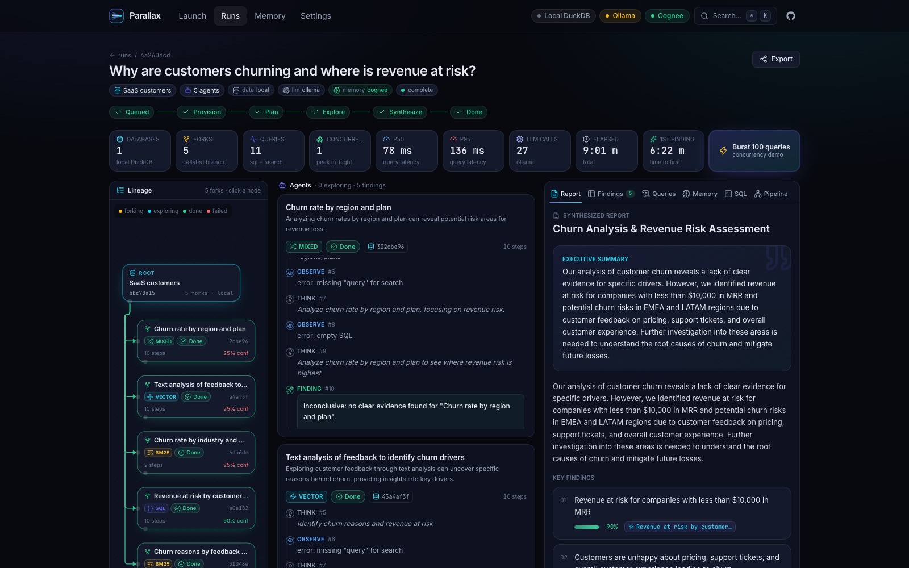

Data & AI Hackathon · San Francisco · Sept 11, 2026
Many agents.Many branches.One answer.
Parallax is a multi-agent data-analysis swarm. Give it a dataset and a question; it forks an isolated Hotdata database per hypothesis, runs analyst agents concurrently (SQL + BM25 + vector search), synthesizes one cited report, and remembers what it learned in Cognee so the next investigation starts smarter.
localhost:3000/runs/aaf0a66e

- Concurrent queries
- 100concurrent queriesp50 15 ms · p95 30 ms — burst across 5 forked databases
- Time to first finding
- 1.2 stime-to-first-findingmeasured from
started_at to the first agent.finding
- Agents per run
- 2–16analyst agents per runone hypothesis each, one isolated database fork each
- API keys needed for local mode
- 0API keys needed for local modeDuckDB forks, fake LLM, local memory — the identical code path